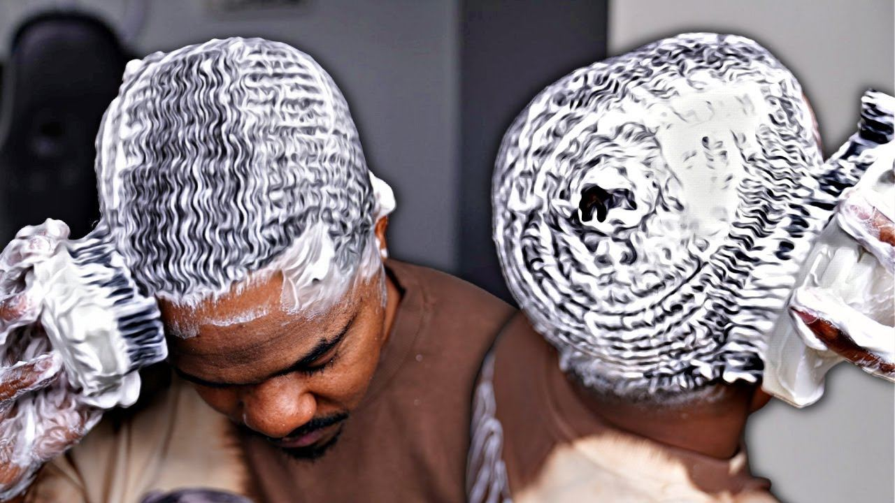

How to Wash 360 Waves Without Wrecking the Pattern
Once your pattern is trained, wash day changes character: you are no longer building, you are preserving. Every hand movement that would be harmless on untrained hair is now a small act of vandalism against weeks of brushing. 360Jeezy (@360Jeezy) demonstrates the wash-and-style approach for established waves in the video below. This protocol covers the details that separate wavers whose pattern survives the shower from those who spend three days after every wash fixing it.
Water and hands: directional discipline
Let the water hit your head so it flows in your pattern directions — forward over the top, down at the back. It sounds fussy until you realise water is a styling force: a showerhead blasting the back of your head upward is brushing against your grain for five straight minutes.
Your hands may smooth in pattern directions and nothing else. The moment you feel your fingers start to scrub — and they will try, out of a lifetime of habit — stop, pick up the brush, and let the brush do all further work. Some wavers keep the brush in the shower permanently for exactly this reason.
Product amounts and the mid-wolf wash
Trained waves need less product than beginners think. Too much shampoo strips the natural oils that help hair lay; too much conditioner coats the hair until the pattern looks dull and the durag slides. A coin-sized amount of each, worked thoroughly with the brush, cleans a full head at wave lengths.
Mid-wolf, the stakes rise: longer hair tangles in the wash, and detangling is where patterns get hurt. Work in sections, brush from the ends of the hair toward the scalp in pattern directions, and never rip through a tangle. Add the conditioner before you detangle, not after — slip is what makes the wolf washable at all.
The dry-down is part of the wash
A wash is not finished when you step out of the shower. The hair is wet, pliable, and at its most influenceable — the next thirty minutes decide whether wash day helped or harmed. Brush a full session, moisturise, and get compression on while damp, then stay compressed until dry.
If life interrupts and you cannot durag immediately, at minimum brush the pattern in and cover with a wave cap. Uncovered air-drying is the one outcome to avoid at all costs: hair dries in whatever direction it pleases, and it pleases chaos.
One more preservation habit: schedule wash day when you can protect the dry-down. A wash followed by a rushed, uncovered afternoon wastes the method's best work. Evening washes that dry under the durag overnight are the trained waver's default for a reason — the schedule is part of the technique.
Watch: HOW TO WASH 360 WAVES: WASH & STYLE METHOD
Video: “HOW TO WASH 360 WAVES: WASH & STYLE METHOD” by 360Jeezy (@360Jeezy) · Watch on YouTube
Shop the gear
Everything in this guide runs on the right gear: a durag that holds compression without slipping, a cap that stays put, and fabric that treats your hair right. The durag.store launch lineup is built to that standard — dual-layer construction, long tails, and stitching made to survive the routine. Join the launch list and use code GOLDSTANDARD for 15% off your first order.
Keep learning
- The Wash and Style Method: The Complete Wash-Day System for Waves — Basic · Wash & Hair Care
- Wash and Style for Beginners: Your First Wave Wash Day, Simplified — Basic · Wash & Hair Care
- Moisturising Waves Without the Buildup: The Light-Hand Method — Intermediate · Wash & Hair Care
Sources: Video — “HOW TO WASH 360 WAVES: WASH & STYLE METHOD” by 360Jeezy (@360Jeezy), youtube.com. Guide written by the durag.store Wave Lab.